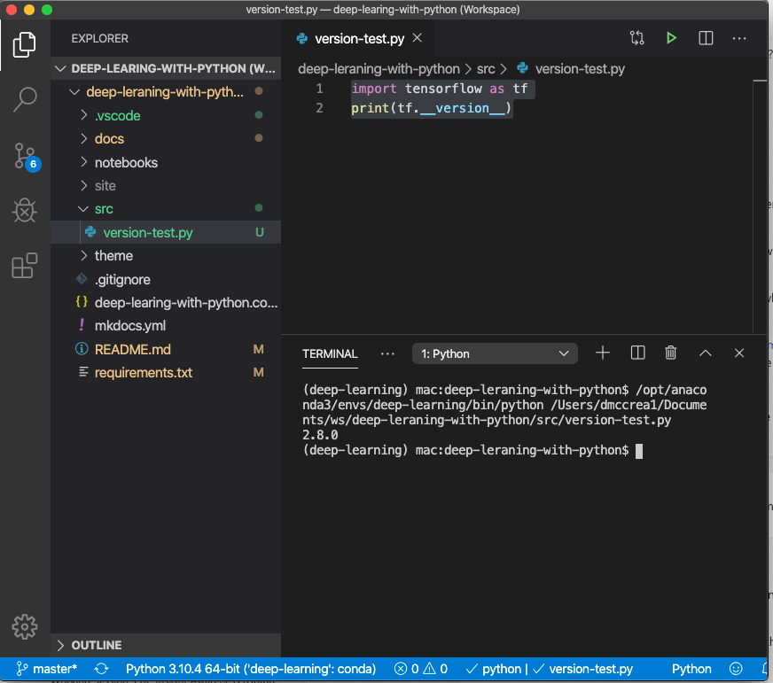
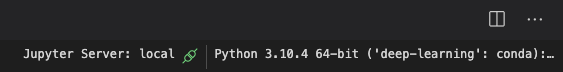

Chapter 2: Getting Started
We demonstrate a setup using Conda, pip and VSCode.
Setup for Doing Labs
1 2 | |
The first step may take 1-2 minutes.
Downloading Tensorflow
1 | |
This might take about 2-3 minutes.
Check Versions
We can use the pip freeze command to verify.
1 2 3 4 5 6 7 8 9 10 11 12 13 14 15 16 17 18 19 20 21 22 23 24 25 26 27 28 29 30 31 32 33 34 35 36 37 38 39 | |
Testing Your TensorFlow Version
1 2 | |
return
1 | |
Configuring Visual Studio Code

Note the blue area at the bottom of the screen allows you to select the virtual environment. In this case the label is:
Python 3.10.4 64-bit ('deep-learning':conda)
Configuring Jypyter Notebook Kernel
Not only do we want to get the Python runtime, but we want to configure the Jupyter Notebook Kernel
On the upper right click on the kernel and then select the appropriate deep-learning conda environment:
